plotfunc3d(t-2, t^2 + 1, t=-10..10)
plotfunc3d(t-2, t^2 + 1, t=-2..2)
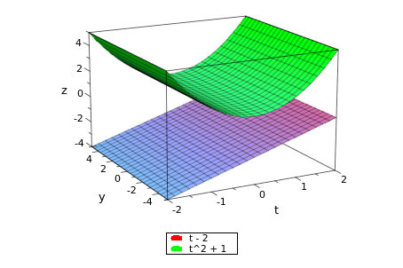
plot::Curve3d([t-2, t^2+1, t], t=-10..10)
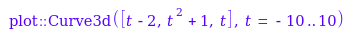
display(%)
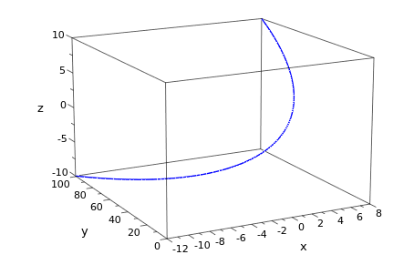
plot:Curve2d([t-2, t^2 + 1], t=-10..10)
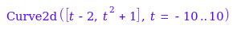
plot::Curve2d([t-2, t^2 + 1], t=-10..10)
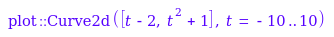
display(%)
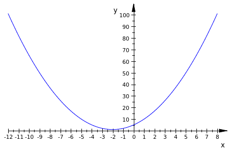
plot::Curve2d([sin(t), 2*cos(t)], t=-10..10)
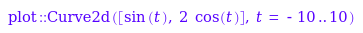
display(%)

plot::Curve2d([exp(1)^t, exp(1)^-t], t=-10..10)
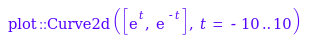
display(%)
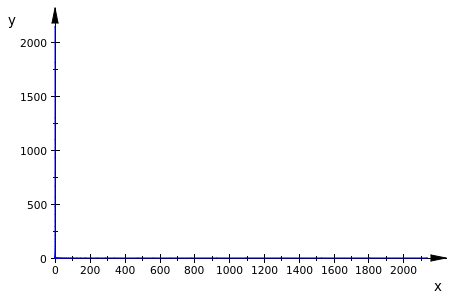
exp(1)

plot::Curve2d([exp(1)^t, exp(1)^(-t)], t=-1..1)
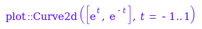
display(%)
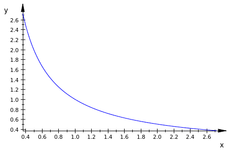
exp(1)^1

exp(1)^-1
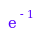
exp(1)^0.5
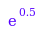
display(%)
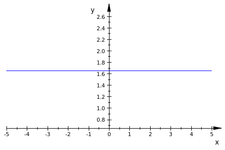
vpa(exp(1)^0.5, 10)
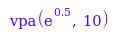
E

digits(10)
vpa(exp(1))
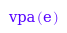
float(exp(1))
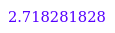
float(exp(1)^0.5)
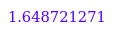
plot(E^t)
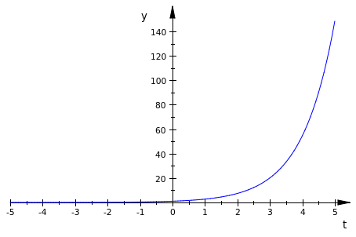
plot(E^-t)
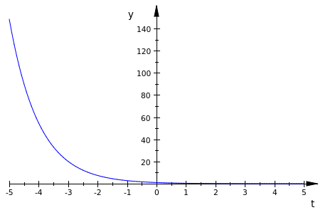
float(E^0)

float(E^2)
float(E^-2)
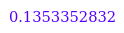
plot::Curve2d([E^(2*t), E^t], t=-1..1)
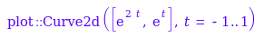
display(%)

plot(E^(2*t))
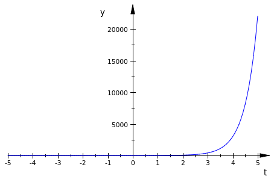
float(E^2)

float(E^4)
diff(t*sin(t))
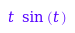
diff(t^2)
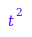
diff(t^2, x)

diff(t^2, t)
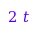
diff(t*sin(t), t)
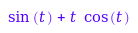
eq1 := a*x^2 + b*x + c = 0
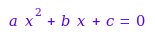
solve(eq1, x)
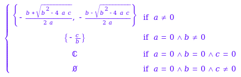
diff(eq1, x)
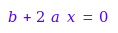
diff(t* cos(2*t), t)

diff(1 / x^2, x)
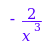
diff( 1 / (x^2), x)
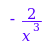
diff(2 * sqrt(t), t)
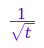
t^(-1/2)

diff(1 / (1 + t), t)
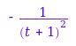
diff(t / (1 + t), t)
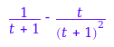
simplify(%)
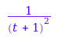
diff(t^2 / (1 + t), t)
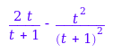
simplify(%)
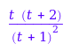
diff(E^(t^2), t)
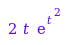
ln(3)
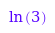
float(%)
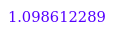
diff(ln(1 + 3*t), t)

diff(ln(t), t)

diff(1 + 3*t, t)
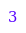
3*(1 / (1 + 3*t))
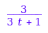
simplify(%)

diff(a*t*cos(3*t), t)
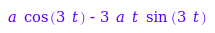
diff(sin(t)^3, t)
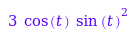
diff(c * cos(t)^3, t)
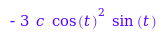
diff(2 * sin(2 * t), t)
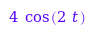
diff(3 * t^2, t)
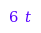
diff(t * e^(t^2), t)
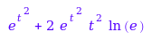
t * e^(t^2)
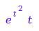
ln(E)

diff(t * E^(t^2), t)
E^t = 1
solve(E^t = 1)
E^1
PI
E^(2 * PI * 1 * I)
float(%)
solve(0 = E^t + (t * E^t))
solve(0 = E^(t^2) + 2 * (t^2) * E^(t^2))
cos(PI/2)

plot::Curve3d([E^t, t*(E^t), t*(E^(t^2))], t=-10..10)
display(%)
diff(E^(-t) * cos(t), t)
plot::Curve3d([E^(-t) * cos(t), E^(-t) * sin(t), E^(-t)], t=-10..10)
display(%)
plot::Curve3d([E^(-t) * cos(t), E^(-t) * sin(t), E^(-t)], t=-2..2)
display(%)
int(t*i - t^3 * j + 3 * t^5 * k, t)
2^6
int((4 / (1 + t^2)) * j + (2*t/(1+t^2))*k, t)
plot::Curve2d([4/(1+t^2), (2*t)/(1+t^2)], t=-10..10)
display(%)
plot::Curve2d([4/(1+t^2), (2*t)/(1+t^2)], t=0..1)
display(%)
int(4/(1+t^2), t)
arctan(1)

ln(2)
arctan(0)

ln(1)

int((4 / (1 + t^2)) * j + (2*t/(1+t^2))*k, t=0..1)
int(t*(t^2 + 1)^3, t)
diff(ln(t), t)
tan(1)
float(tan(1))
cos(1)
sin(1)
cos(1)/sin(1)

float(%)

float(sin(1)/cos(1))

arctan(1)
cos(1)/sin(1)
float(%)

float(PI/4)
tan(1)^-1
float(%)
int(t^2 * ln(t), t)
diff(ln(t), t)

diff(1/t, t)
x^(-1/2)

2*sqrt(x)
sqrt(x)*sqrt(x)